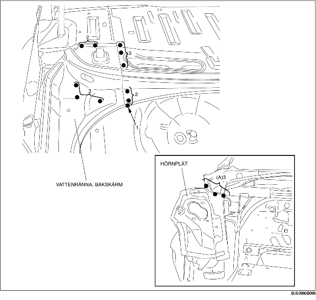
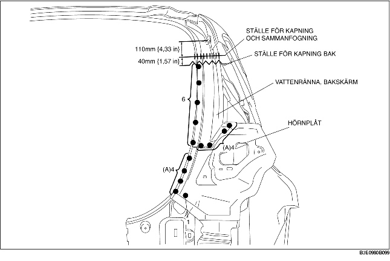

BORTTAGNING AV VATTENRÄNNA, BAKSKÄRM OCH HÖRNPLÅT
B3E098070440B01
4SD
1. Ta bort bakskärmens vattenränna och hörnplåt.
-
Observera
-
• Om bakskärmens vattenränna och hörnplåt tas bort separat, borra de 3 punkter som markeras med (A).

5HB
1. Ta bort bakskärmens vattenränna och hörnplåt.
-
Observera
-
• Om bakskärmens vattenränna och hörnplåt tas bort separat, borra de 8 punkter som markeras med (A).
